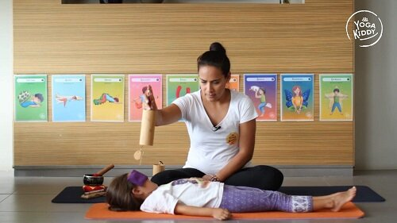

Según el latín, relajación es la acción y efecto de relajar o relajarse (aflojar, ablandar), por tanto la relajación está asociada a reducir la tensión física y mental.
Hoy en día vivimos en una constante vorágine donde todos nos vemos afectados de una u otra manera, y es por esto la necesidad de encontrar estados de bienestar, ya que así podemos conseguir un alto grado de sensibilidad y receptividad natural, permitiendo que nuestro ser encuentre su equilibrio.
Relajarnos es ir a ese lugar tan preciado, ese espacio maravilloso que habita de cada uno de nosotros/as. Territorio donde abunda la calma, la paz y el amor.
Reconocer el valor del silencio interno, de escucharnos, de mirarnos, de volver al origen es una labor que necesitamos hoy en día.
El regalar momentos a otros y a nosotros mismos, les permite comprender la empatía y el valor del cuidado de quienes los rodean. El disfrute del relajo colectivo, escuchando al silencio, crea atmósferas de respeto, concentración y mucho amor.
A continuación, te comparto aspectos muy importantes al momento de guiar una relajación:
Crear atmósfera
Las experiencias dependen de los detalles y de cómo estas se gestionan. Usa algún instrumento que los y las invite a un momento de calma, apaga la luz, cierra las cortinas, utiliza un aroma en particular, cambia la disposición del espacio, ocupa alguna música, etc…lo importante es que todo recurso utilizado sea para colaborar en dicho proceso de relajación que queremos alcanzar.
La voz
Usa el instrumento de tu voz con conciencia, manteniendo un volúmen más bajo y un tono más dulce y sereno. Cuida siempre de tu respiración.
El cuerpo
Invítalos/as a que busquen una postura cómoda, idealmente la postura del cadáver (svanasana), la cual puede ser nombrada como la postura de la estrella sobre la arena, la estrella que flota en el mar u otras ideas creativas que se te ocurran.
Consignas a utilizar
Ahora descansaremos sobre nuestra alfombra mágica/ Nos relajaremos sobre una cama de plumas o de algodón/ Descansaremos sobre una nube blanca y suave/ Nos imaginaremos estar en nuestro lugar de la naturaleza preferido, etc.
Instrumentos a utilizar
Si decides utilizar sonidos en tu relajación, es de vital importancia que sean instrumentos que contribuyan de manera armónica a tu objetivo de ofrecer un espacio de calma para los niños y las niñas.
Ejemplos: Palo de agua/ Tinshas/ Pin armonizados/ Kalimba/ entre otros.
Finalización gradual
La manera en que terminas la relajación, determinará la trascendencia de ella. Por ello, es necesario cuidar esta transición de forma amorosa y sutilmente. El término no debe ser de golpe, sino que utilizando consignas amables para el regreso de sus viajes mágicos.
Ejemplos: Nuestro viaje ha terminado, comenzaremos a mover los dedos de nuestros pies y de nuestras manos. / Nos estiraremos como una plastilina, para despertar a todo nuestro cuerpo. / Daremos un gran bostezo, como cuando despertamos por la mañana, etc.
¡Y lo más importante! ¡ Hazlo como te gustaría que lo hicieran contigo!